Création de la machine virtuelle
On a décidé de creer notre machine virtuelle sur VirtualBox car c'est un hyperviseur que l'on connaissait déjà avant de travailler sur cette SAE, car on l'a déjà utilisé par le passé pour un usage personnel. Voici la configuration de notre VM. On a accordé 32Go de stockage et 8Go de memoire vive pour être sur d'avoir assez de stockage disponible, sans pour autant tout utiliser, pour pouvoir travailler sur la SAE sans souci.
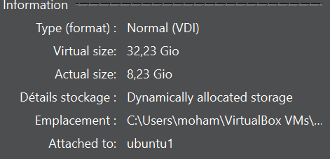Creation des comptes et du groupe et personnalisation du prompt
Après l'installation d'Ubuntu, la distribution que nous avons choisi d'installer pour notre VM de type Linux car on a déjà travaillé sur cette distrubution auparavant, nous avons enchainé avec la création des comptes et du groupe, selon les consignes qui nous ont été donné. Voici les commandes qui ont été utilisé afin de pouvoir les creer.
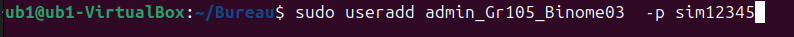 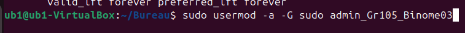 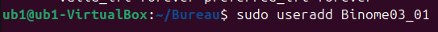 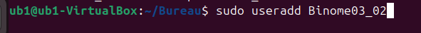 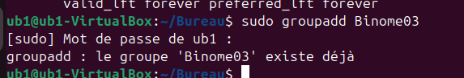 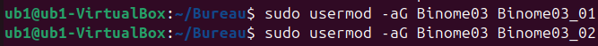Voici les resultats obtenus suite à l'éxécution de ces commandes.
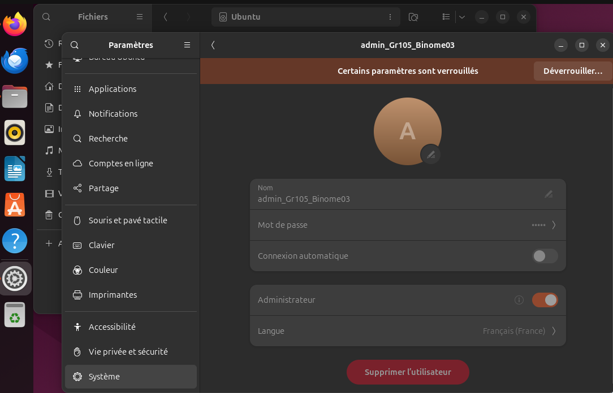 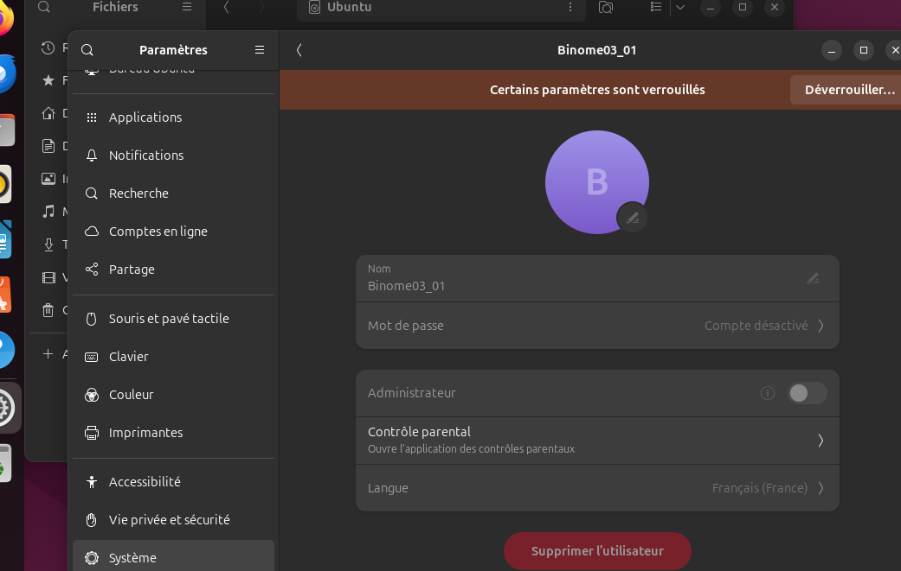 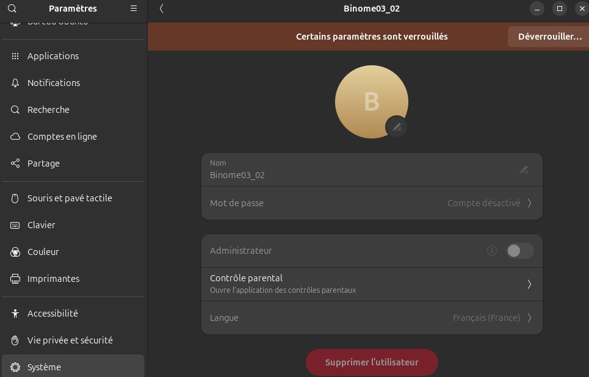Ensuite nous avons personnalisé le prompt. Voici les commandes utilisées et les resultats obtenus
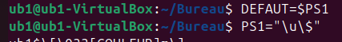 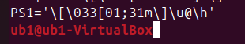Conclusion
Merci d'avoir lu notre rapport.